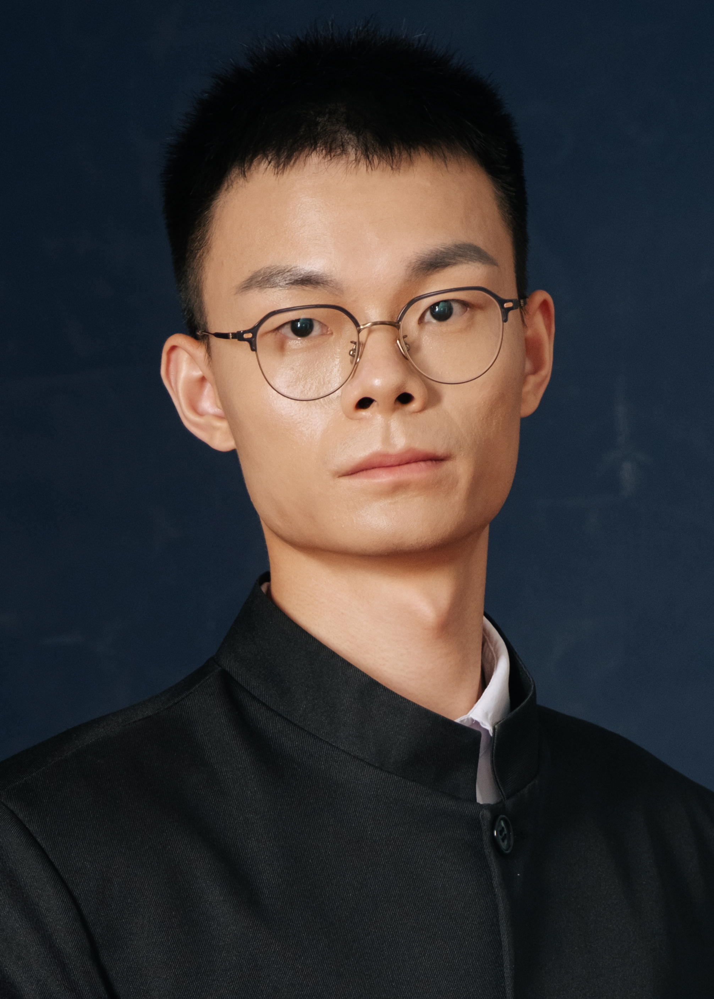

|
Bowen Li
|
 |
Bowen Li, Ph.D (CUHK-SZ), M.Sc (UCAS), B.E (HEU)
Post-doctoral Fellow
Linköping University
Linköping, Sweden
Email: bowenli6@link.cuhk.edu.cn
[Google Scholar]
|
About me
I'm currently a post-doctoral fellow at Linköping University with Prof. Nikolaos Pappas. I got my Ph.D. in Computer and Information Engineering at The Chinese University of Hong Kong, Shenzhen, under the supervisor of Prof. Junting Chen. My research interest lies in resource allocation, interference management, network routing, and optimization for wireless communications.
Education
Ph.D in Computer and Information Engineering, The Chinese University of Hong Kong, Shenzhen, Sep. 2020 - Mar. 2025
M.Sc in Communication and Information Systems, University of Chinese Academy of Sciences, Sep. 2017 - Jun. 2020
B.E in TeleCommunication Engineering, Harbin Engineering University, Sep. 2013 - Jun. 2017
Research Interests
Semantic communications
UAV communications
|